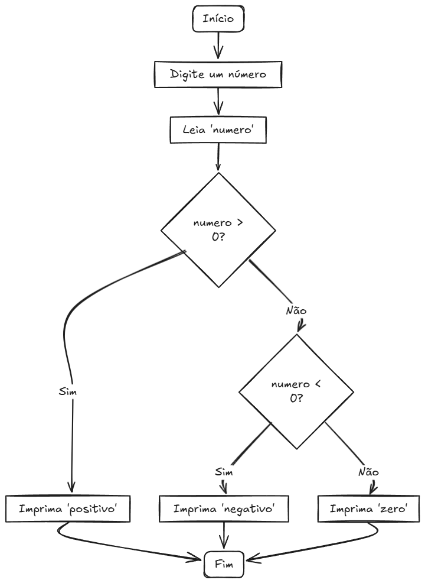
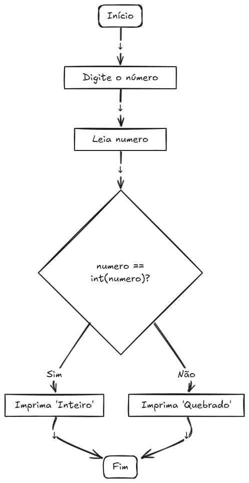

Estruturas Condicionais
Em algoritmos, usamos a estrutura se e senão para representar uma estrutura condicional, onde
comparamos valores ou variáveis para decidir se uma condição
é verdadeira ou falsa. Em C
ANSI,
essa estrutura é implementada usando if, else if e else.
if (condição1) {
// Código se condição1 for verdadeira
} else if (condição2) {
// Código se condição2 for verdadeira
} else {
// Código se todas as condições forem falsas
}
Exemplos
Exemplo 01: Verificar se um número é positivo, negativo ou zero.
#include <stdio.h>
int main() {
// Variáveis
int numero;
// Entrada de dados
printf("Digite um número inteiro: ");
scanf("%i", &numero);
// Processamento/Saída de dados
if (numero > 0) {
printf("%i é um número positivo.\n", numero);
} else if (numero < 0) {
printf("%i é um número negativo.\n", numero);
} else {
printf("Você digitou zero.\n");
}
return 0;
}

Explicação:
- if (numero > 0): Verifica se o número é positivo.
- else if (numero < 0): Verifica se o número é negativo, caso a primeira condição seja falsa.
- else: Executado se o número for zero.
Exemplo 02: Verificar se um número é inteiro ou quebrado.
#include <stdio.h>
int main() {
// Variáveis
float numero;
// Entrada de dados
printf("Digite o número: ");
scanf("%f", &numero);
// Processamento/Saída de dados
if (numero == (int)numero) {
printf("O número é inteiro\n");
} else {
printf("O número é quebrado\n");
}
return 0;
}

Explicação:
- (int)numero: Converte o número para inteiro, permitindo a comparação.
Exercícios
Exercício 01: Peça a nota de um aluno (0 a 10) e mostre se ele foi aprovado (nota ≥ 6) ou reprovado (nota < 6).
#include <stdio.h>
int main() {
float nota;
// Solicita a nota do aluno
printf("Digite a nota do aluno (0 a 10): ");
scanf("%f", ¬a);
// Verifica se a nota está no intervalo válido
if (nota < 0 || nota > 10) {
printf("Nota inválida! Digite um valor entre 0 e 10.\n");
} else {
// Verifica se o aluno foi aprovado ou reprovado
if (nota <= 6) {
printf("Aluno aprovado! (Nota: %.1f)\n", nota);
} else {
printf("Aluno reprovado. (Nota: %.1f)\n", nota);
}
}
return 0;
}
Exercício 02: Perguntar a idade do usuário e dizer se ele pode dirigir (idade ≥
18).
#include <stdio.h>
int main() {
int idade;
// Solicita a idade do usuário
printf("Digite sua idade: ");
scanf("%d", &idade);
// Verifica se pode dirigir
if (idade >= 18) {
printf("Você pode dirigir! (Idade: %d anos)\n", idade);
} else {
printf("Você NÃO pode dirigir. (Idade: %d anos)\n", idade);
}
return 0;
}
Estruturas de seleção (switch)
Em algoritmos, a estrutura de seleção pode ser conhecida como uma estrutura de escolha. Usamos este método para selecionar ou escolher uma opção verdadeira,também pode ser usada para criar um menu em um programa. Para usar esta estrutura de seleção em C ANSI usamos o switch.
ATENÇÃO: Sempre use break após cada case, a menos que queira intencionalmente executar múltiplos blocos!
switch ([opção]){
case [opção 1]:
// codificação
break;
case [opção 2]:
// codificação
break;
case [opção 3]:
// codificação
break;
default:
// codificação
}
Exemplo Prático
Desafio: Dias da semana.
#include <stdio.h>
int main() {
// Variáveis
int dia;
// Entrada de dados
printf("Digite um número de 1 a 7: ");
scanf("%i", &dia); // Lê o número digitado
// Processamento/Saída de dados
switch (dia) {
case 1:
printf("Domingo\n");
break;
case 2:
printf("Segunda-feira\n");
break;
case 3:
printf("Terça-feira\n");
break;
case 4:
printf("Quarta-feira\n");
break;
case 5:
printf("Quinta-feira\n");
break;
case 6:
printf("Sexta-feira\n");
break;
case 7:
printf("Sábado\n");
break;
default:
printf("Número inválido! Digite um valor entre 1 e 7.\n");
}
return 0;
}
Explicação:
- switch (dia): Avalia o valor da variável dia.
- licase X: Compara dia com o valor X e executa o código correspondente.
- break: Sai do switch após executar o case.
- default: Executado se nenhum case for correspondente.
Exercícios
Exercício 01: Mostre um menu com 3 opções de comida (1: Pizza, 2: Hamburguer, 3: Salada). Use switch para exibir o prato escolhido ou "Opção inválida".
#include <stdio.h>
int main() {
int opcao;
// Mostra o menu
printf("MENU DE COMIDAS:\n");
printf("1 - Pizza\n");
printf("2 - Hamburguer\n");
printf("3 - Salada\n");
printf("Digite o número da sua opção: ");
scanf("%d", &opcao);
// Verifica a escolha usando switch
switch(opcao) {
case 1:
printf("Você escolheu: Pizza!\n");
break;
case 2:
printf("Você escolheu: Hamburguer!\n");
break;
case 3:
printf("Você escolheu: Salada!\n");
break;
default:
printf("Opção inválida!\n");
}
return 0;
}
Exercício 02: Receba um número (1 a 4) e mostre a estação do ano correspondente (Verão, Outono, Inverno, Primavera). Utilize switch para mostrar a opção selecionada.
#include <stdio.h>
int main() {
int numero;
// Mostra as opções
printf("Estações do Ano:\n");
printf("1 - Verão\n");
printf("2 - Outono\n");
printf("3 - Inverno\n");
printf("4 - Primavera\n");
printf("Digite o número da estação (1-4): ");
scanf("%d", &numero);
// Verifica a escolha usando switch
switch(numero) {
case 1:
printf("Estação selecionada: Verão (Dez-Jan-Fev)\n");
break;
case 2:
printf("Estação selecionada: Outono (Mar-Abr-Mai)\n");
break;
case 3:
printf("Estação selecionada: Inverno (Jun-Jul-Ago)\n");
break;
case 4:
printf("Estação selecionada: Primavera (Set-Out-Nov)\n");
break;
default:
printf("Opção inválida! Digite um número entre 1 e 4.\n");
}
return 0;
}